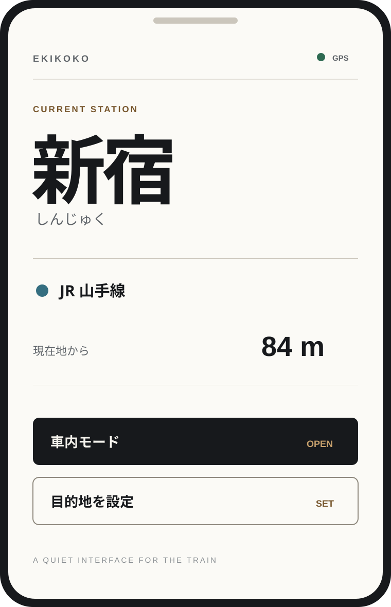
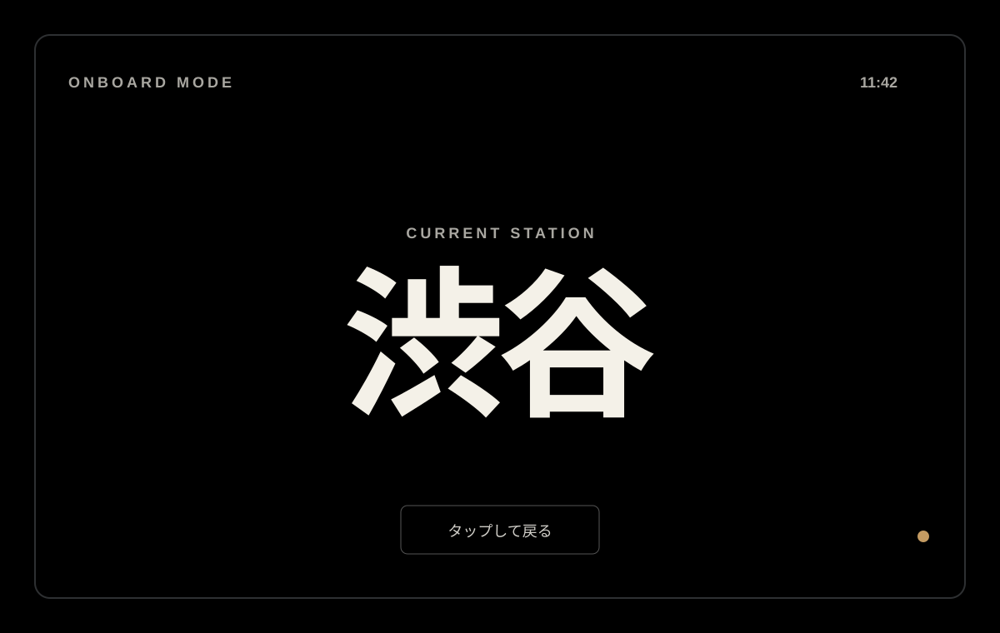

01 / View
表示が見えない
混雑した車内や座席位置によって、電光掲示板が人の陰に隠れてしまう。知りたいのに視線が届かない。
必要なのは経路検索ではなく、いま目の前の状況をすぐ把握すること。エキココは、その一瞬の確認だけに焦点を当てています。
混雑した車内や座席位置によって、電光掲示板が人の陰に隠れてしまう。知りたいのに視線が届かない。
イヤホン、会話、居眠り。案内放送を一度逃すだけで、現在地が分からなくなることがある。
知りたいのは「今どこ？」だけ。経路検索を開くより、手元で一瞬で確認したい。
Product concept
駅名を大きく。状態を明確に。操作は少なく。スマホアプリの一般的なカードUIではなく、駅名標・路線図・車内表示器の情報設計を取り込みます。
現在駅を主役にしながら、路線・距離・目的地との関係を迷わず読めるように整理します。

車内モードは、車内案内ディスプレイのように情報を絞ります。黒い背景と大きな駅名で、短い確認に最適化します。

車内での利用時は背景を完全な黒にし、現在駅・次駅・退出操作だけを残します。ネオンや派手な演出ではなく、公共交通の案内表示に近い静かな見え方です。
毎日の電車で使うものだから、使い始めるまでの手順も短くしています。
ブラウザからそのまま利用できます。ホーム画面に追加すればアプリのように起動できます。
現在地の利用を許可すると、近くの駅を判定して現在駅表示へ切り替わります。
あとは必要なときに画面を見るだけ。移動に合わせて周辺の駅情報を更新します。
エキココは位置情報を原則として端末内で処理します。対応駅データの範囲外で外部の駅情報を参照する場合も、座標は約1km単位に丸めて送信する設計です。
氏名やメールアドレスを登録せず、現在駅の確認をすぐ始められます。
現在地から駅までの判定は、できる限りブラウザ内で完結する構成です。
ホーム画面に追加して、日常の移動で呼び出しやすい形で使えます。
主要アセットと駅データをキャッシュし、通信状況が不安定な場面も考慮しています。